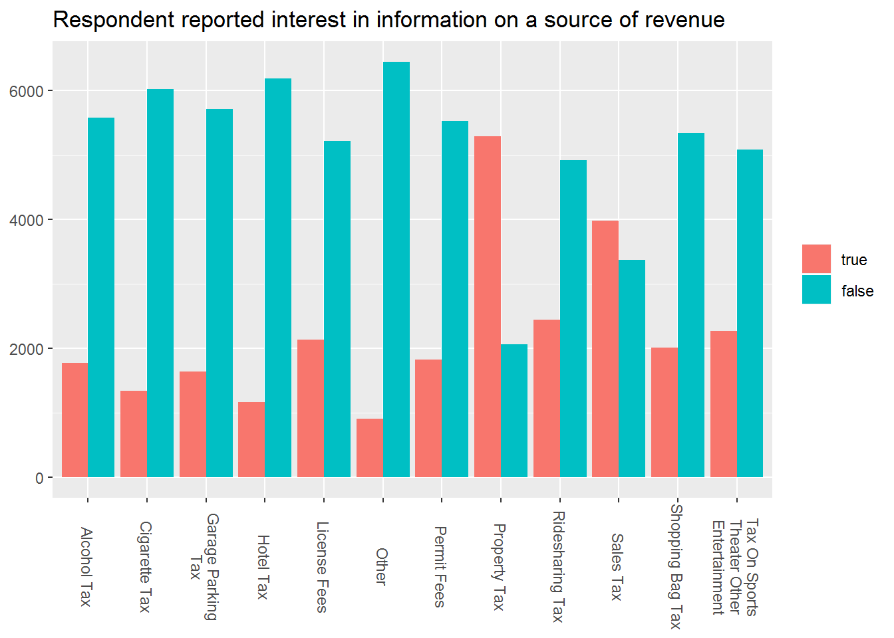
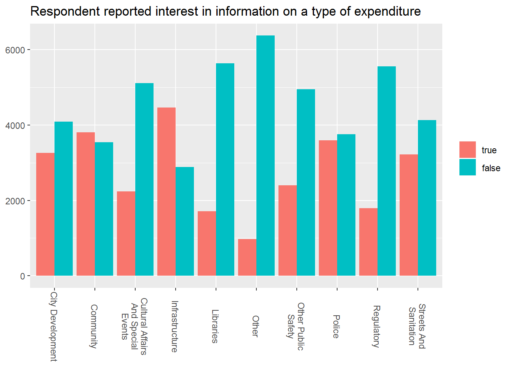
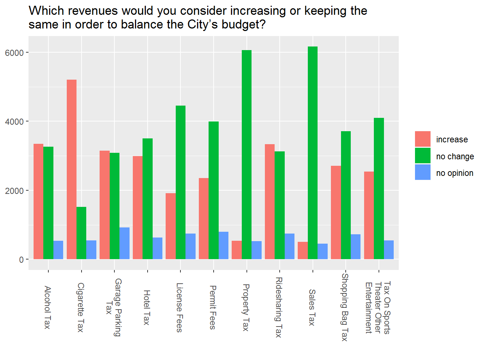
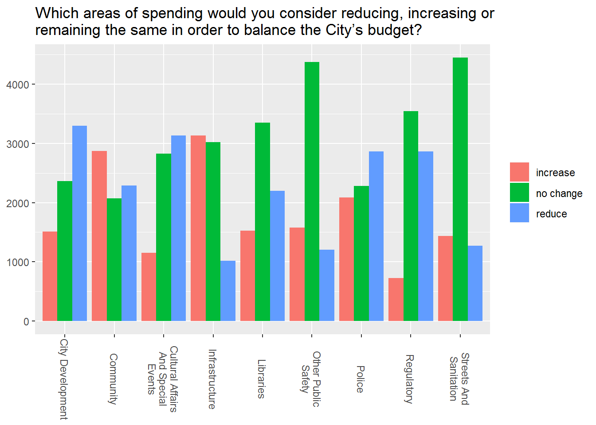
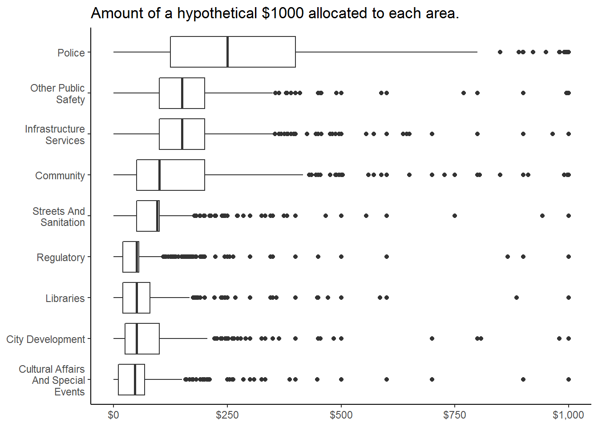

sr <- data.table::fread("https://data.cityofchicago.org/api/views/dm4w-zcp5/rows.csv?accessType=DOWNLOAD")
colnames(sr) <- tolower(colnames(sr))
colnames(sr) <- gsub("community_area", "area_id", colnames(sr))city variable to lowercase.community_area variable to match the key variable name used later on.#subset to just completed requests
completed <- filter(sub, status=="Completed") %>% select(-status) %>%
mutate(dur_sec = as.numeric(difftime(.$closed_date,
.$created_date))
) %>%
group_by(sr_type)
#summarize the df of completed requests
dur_sum <- summarise(completed,
day_diff=difftime(closed_date,created_date,units="days")%>%
mean() %>% round(digits=8)) %>% filter(day_diff>0.5)
#find some specific values to print the results message
min_idx <- which(dur_sum$day_diff==min(dur_sum$day_diff))
min_time <- as.numeric(dur_sum$day_diff[min_idx])
min_type <- dur_sum$sr_type[min_idx]
min_dur <- nice_dur(min_time)
max_idx <- which(dur_sum$day_diff==max(dur_sum$day_diff))
max_time <- as.numeric(dur_sum$day_diff[max_idx])
max_type <- dur_sum$sr_type[max_idx]
max_dur <- nice_dur(max_time)The results of the analysis found that the fastest request type fulfilled was the Sign Repair Request - Stop Sign, with an average completion time of 14.23 hours. The slowest request type fulfilled was the Sidewalk Inspection Request, with an average completion time of 145.44 days.
dep_sp <- select(sr, owner_department, sr_type,
status, created_date, closed_date) %>%
filter(status=="completed") %>% select(-status)
dep_sp[,3:4] <- lapply(dep_sp[,3:4], mdy_hms)
dep_sp <- mutate(dep_sp, dur_sec = as.numeric(difftime(dep_sp$closed_date,
dep_sp$created_date))
) %>% group_by(owner_department, sr_type) %>%
summarise(day_diff = difftime(closed_date,created_date, units="days") %>%
mean() %>% round(digits=8), count=n()) %>% filter(day_diff>0.5)
avg_speed <- summarize(dep_sp, avg_req_n_days=mean(day_diff) %>% round (2))budget <- read.socrata("https://data.cityofchicago.org/api/views/drbg-ny73/rows.csv?accessType=DOWNLOAD", "ykQDb7IDvb4jrHDEx6hk7f8uF")
gbudget <- gather(budget, cat, value, -c(date, zip_code, counter_column)) %>%
mutate(cat=gsub("(?<=assignment)_","-",cat, perl = TRUE)) %>%
mutate(cat=gsub("(?<=change)_","-",cat, perl = TRUE)) %>%
mutate(cat=gsub("(?<=interest)_","-",cat, perl = TRUE)) %>%
separate(cat, c("category", "type"), sep="-") %>%
select(-counter_column) %>% mutate(id=1:nrow(.))
gbudget$value <- gsub("Increase.*","increase",gbudget$value) %>%
gsub(".*Same","no change",.) %>% gsub("Reduce.*","reduce",.) %>%
gsub("No Opinion","no opinion",.) %>% tolower()
gbudget$value[gbudget$value==""] <- NA
gbudget$value[is.na(gbudget$value)] <- "no answer"
gb <- filter(gbudget, category!="X_1000_assignment")
gb_sum <- summarize(group_by(gb, category, type, value), count=n()) %>%
filter(value!="no answer")
gb_sum$category <- gsub("_interest","_int",gb_sum$category) %>%
gsub("_change","_cha", .) %>% tolower()
for (gbcat in gb_sum$category) {
plot <- filter(gb_sum, category==gbcat)
if (grepl("_int$",gbcat)) {
plot$value <- factor(plot$value, levels=c("true","false"))
}else if (grepl("revenue",gbcat)){
plot$value <- factor(plot$value, levels=c("increase","no change", "no opinion"))
}else if (grepl("spending",gbcat)){
plot$value <- factor(plot$value, levels=c("increase","no change", "reduce"))
}
plot <- ggplot(plot, aes(str_wrap(str_to_title(gsub("_"," ",type)),
width=16), count, fill=value)) +
geom_col(position="dodge") +
#scale_x_discrete(labels=function(x){sub("\\s", "\n", x)}) +
labs(title=element_blank()) +
theme(axis.title.x=element_blank(),
axis.title.y=element_blank(),
legend.title=element_blank(),
axis.text.x = element_text(angle=270, hjust=, vjust=0.5))
assign(gbcat, plot)
}

